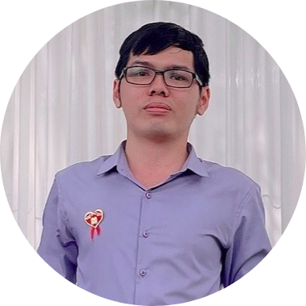

|  | Mai Phan Tien DuangAI Engineer of CBD Robotics I'm an AI Engineer, mainly working on NLP and Web |
| Dates | Activities |
|---|---|
| 2016 - 2021 |
I graduated from Can Tho University in March 2021: |
| 2021 - 2022 |
I learnt AI Specialist (DS & AI) course in VTC Academy: |
|
|